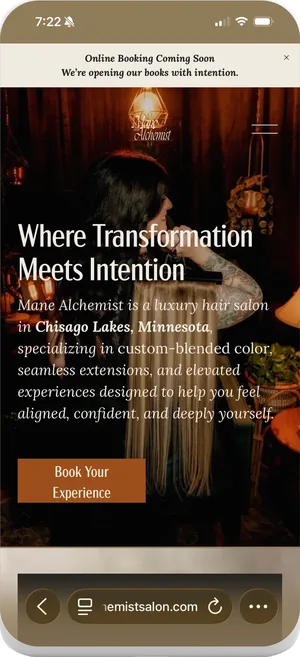
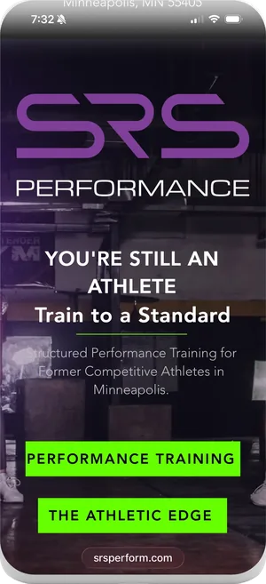
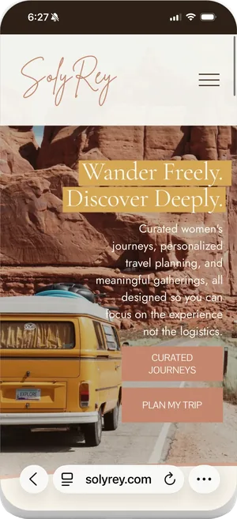

A logo, a brand guide, and a website of five to eight pages. The guide covers your colors, your voice, and how the brand gets used and how it does not. Then the social strategy, the content plan, and the launch plan that puts it in front of people. Ongoing support after launch runs two reels and one static a week, with captions, hashtags, posting and analytics.
The resurfacing business
Nothing is wrong with you. Something is on top of you.
Brand, operations and business development for founders and leaders who are successful on paper and depleted underneath. Forest Lake, Minnesota.
Mane Alchemist Salon SolyRey SRS Performance
The condition
It is 11:40pm and the tabs in your mind won't close.
Those are completely different problems, and only one of them is yours to fix.
-
You are not tired from work. You are tired from being continuously required.
-
You have run out of external explanations. So the fault has quietly gone internal.
-
You are not stuck because you don't know what to do. You are stuck because you are waiting to be sure you will do it right.
-
You have not had an unclaimed hour in years. That is worth more attention than the exhaustion.
What I actually do
Brand, operations and business development. One person, held at once.
Most businesses solve this with three vendors who never speak to each other, or three hires they cannot carry. I am the partnership instead. You get the scope your business actually needs, without a salary attached to it.
Every engagement is built for the business in front of me. A full brand audit if that is what is needed. A full build if that is what is needed. Nothing templated and no version of you I have already sold to someone else.
Logos, brand guides, websites, social strategy and launch plans, scoped to what the business in front of me actually needs.
We look at how the work actually moves, intake through handoff, and find the parts held together by you remembering to do them. Then we decide what changes and where the money is better spent.
I come out of business development, so we start with the industries you are in and the people you want in front of. I build the vetting database that sorts who is hot, warm and cold. Then a 90 day plan covering where to pitch and what to say when you get there.
Currently building five websites and the dashboard that runs them, for one client.
- Website
- from $4,000
- Social and content
- from $3,600 a quarter
- Full brand launch
- from $15,000
Every price is published, and your Sounding fee comes off it.
I lead with heart and close with operations.
Proof
The work, and their words.
-


Mane Alchemist Salon
Full brand launch. Logo, brand guide, voice, and a website built to scale. Followed by a 90 day social launch plan that built demand before opening. Now on quarterly content and monthly strategy.
manealchemistsalon.com (opens in a new tab) -


SRS Performance
Brand and operations for a Minneapolis strength studio. Took over a half built site and rebuilt it as a brand. Then email funnels, offering guides, niche and differentiation, and a plan for getting into the community and vetting locations.
srsperform.com (opens in a new tab) -


SolyRey
Full brand refresh for a founder with a clear vision and no capacity to execute it. New logo, brand guide, and a complete website relaunch.
solyrey.com (opens in a new tab)
The positioning behind each of the three
She listens with intention, quickly understands your vision, and brings it to life with ease. As a new business owner, she has lifted so much off my plate.
Cydnie is very knowledgeable and incredibly dedicated. She helped redesign how I operate!
I’m so grateful our paths crossed. Her words have a way of landing right where you need them, and her online presence reflects the warmth and wisdom she brings to every interaction.
If you are weary from life and want to reset and refresh yourself, take a chance on an experience that will not disappoint you if you attend with open hands and heart.
I was burnt out and struggling to figure out why I always felt behind. My need to be perfect and always reliable had become the reason I failed to show up for myself when I needed it the most.
I learned that I matter too.
 Play Melissa’s video about the Costa Rica retreat
Play Melissa’s video about the Costa Rica retreat
Built to stand.
A brand is only finished when it can carry weight. These are running.
-
Mane Alchemist Salon
Brand from nothing: positioning, logo, identity kit, website and social.
-
SolyRey
Logo, brand kit and website.
-
SRS Performance
Website for a strength and performance studio in Minneapolis.
Start here
One conversation. Nothing signed.
-
The conversation
Ninety minutes on the business, and I ask a lot of questions.
-
What arrives
Two days later, in writing: where the brand actually is, what is holding it there, and where it can go. Plus the first move, named.
I do not know what it is yet.
Nothing to prepare. You do not have to know what it is yet.
It is all in my head and none of it is organised.
Bring it in the state it is in. Sorting it is the work.
I do not know what I would walk away with.
A written analysis of where the brand can go, and the first move to make.
Full · Waitlist open
Fifteen.
The Greece edition.
Eight days at Armonia Retreat Center in Douliana, Crete. Fifteen women. Twelve questions, and you answer the first before you get on the plane.
Nobody will need anything from you for eight days. That is the entire brief.

Before you go
There's no wrong way to do it.
Ninety minutes, and a written analysis two days later. You leave with your brand looked at properly and somewhere to take it.
Not ready? Ask me a question. Or take The Letters, Sunday nights, no pitch.
Questions
Before you ask.
Is this brand strategy, or is this a conversation about how I feel?
It is brand strategy, and it starts with how you feel because that is where the information is. You cannot position a business when the person running it cannot say plainly what she wants it to do. So I lead with heart and I close with operations. You will leave with words for your business, not a mood.
What if I cannot explain what is wrong?
That is the normal starting condition, and it is the thing being solved. You have run out of external explanations, so the fault has quietly gone internal, and that is very hard to describe out loud. Bring it in the state it is in.
What is the resurfacing business?
It is how Cydnie Jocelyn describes her practice. She is not in the brand business or the retreat business; she brings founders and leaders back to the surface and then builds the business around whoever comes up. The methodology is Resurface, then Reclaim, then Build: permission, a witness, and a plan, in that order.
How do I start working with Cydnie Jocelyn?
With one conversation. Ninety minutes on the business, nothing signed, and a written analysis two days later of where the brand can go, plus a straight answer on whether you need anything further, including when the honest answer is that you need less than you came for.
Where is Cydnie Jocelyn based?
Forest Lake, Minnesota, about thirty minutes north of Saint Paul. She works in person across the Twin Cities metro, including Minneapolis, Saint Paul, Stillwater, Woodbury, White Bear Lake, Blaine, Maple Grove, Wyoming and Hugo, and remotely with clients anywhere. Retreats run in the United States and internationally.